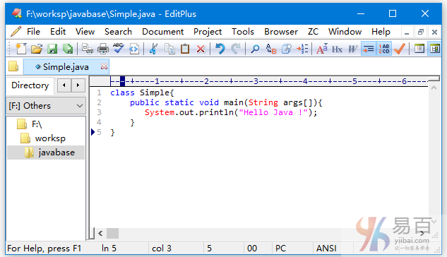
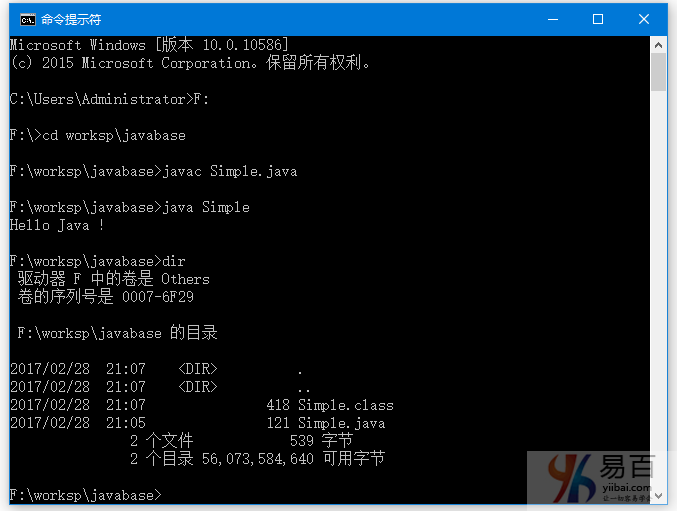
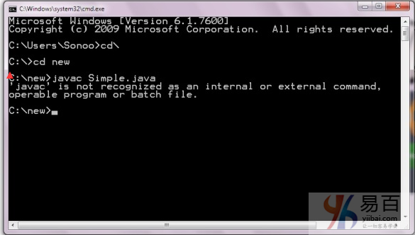

☰ 目录
03 Hello World
Hello Java示例的要求
要执行任何java程序，您首先需要：
- 安装JDK，如果你没有安装它，下载JDK并安装它。
- 设置
jdk/bin目录的路径，参考：
- 创建或编写java程序
- 编译并运行java程序
创建hello java示例
现在让我们创建hello java程序，即创建一个 Simple 类，代码如下：
class Simple{
public static void main(String args[]){
System.out.println("Hello Java !");
}
}
将上面代码保存在一个文件：Simple.java 中。
编译 Simple.java文件中的代码：
javac Simple.java
执行编译后生成的二进制代码(Simple.class)：
java Simple
输出结果：
Hello Java
理解第一个java程序
让我们看看class，public，static，void，main，String []，System.out.println()的含义。
class关键字用于在java中声明一个类。public关键字是一个表示可见性的访问修饰符，它表示对所有人可见。static是一个关键字，如果将某个方法声明为static，它被称为静态方法。 静态方法的核心优势是不用创建对象就可以直接调用。 main方法由JVM执行，因此它不需要创建对象来调用main方法。所以它节省了内存。void是方法的返回类型，它意味着它不返回任何值。main表示程序开始(执行的入口)。String [] args用于命令行参数，在以后会学习。System.out.println()是打印输出语句。在稍后我们会来了解System.out.println语句的内部工作原理。
下面我们来演示编写简单程序完整过程，通过开始菜单 -> 所有程序 -> 附件 -> 打开记事本(或者您常用的文本编辑器)，并写如下所示的简单程序：

如上图所示，在编辑器(记事本)中编写java的简单程序并将其保存为Simple.java文件。 要编译和运行这个程序，可通过开始菜单 ->所有程序 ->附件 -> 打开命令提示符。
要编译和运行上述程序，首先转到保存Simple.java文件所在的目录; 本示例中的目录是 F:\worksp\javabase 。命令提示符下进入这个目录并按步输入：
编译 Simple.java文件中的代码：
javac Simple.java
执行编译后生成的二进制代码(Simple.class)：
java Simple
输出结果：
Hello Java
整个过程如下图所示 -

编写Java程序的方式有多少种？
有很多方法可用来编写一个java程序。 可以在java程序中进行的修改如下：
1)通过改变修饰符的顺序，方法原型不改变。
让我们再来看看main方法的简单代码。
static public void main(String args[])
2)java数组可以使用后类型，前变量或后变量。
让我们看看编写main方法的不同方式的代码。
public static void main(String[] args)
public static void main(String []args)
public static void main(String args[])
3)通过传递3个点为main方法提供var-args支持
让我们来看看在main方法中使用var-args的简单代码，在Java新特性一章中我们将学习var-args的用法。
public static void main(String... args)
4)在java中的类的末尾的分号是可选的。
让我们来看看下面简单的代码。
class A{
static public void main(String... args){
System.out.println("hello java4");
}
};// ";"- 这里加不加分号没有影响
有效的java main方法签名
public static void main(String[] args)
public static void main(String []args)
public static void main(String args[])
public static void main(String... args)
static public void main(String[] args)
public static final void main(String[] args)
final public static void main(String[] args) /// can add final
final strictfp public static void main(String[] args) /// strictfp?
无效的java main方法签名
public static 必须在void 声明的前面。 且 不能用 abstract。
public void main(String[] args)
static void main(String[] args)
public void static main(String[] args)
abstract public static void main(String[] args)
解决错误: “javac不能识别为内部或外部命令”
说的应该是环境变量的设置？？？
如果发生如下图所示的问题，则需要设置路径。由于DOS不知道javac或java命令，所以我们需要设置path。 在这种情况下，如果将程序保存在 jdk/bin 文件夹中，则不需要路径。但最好设置路径，设置路径之后任何地方都可以使用 javac或java命令了 。
